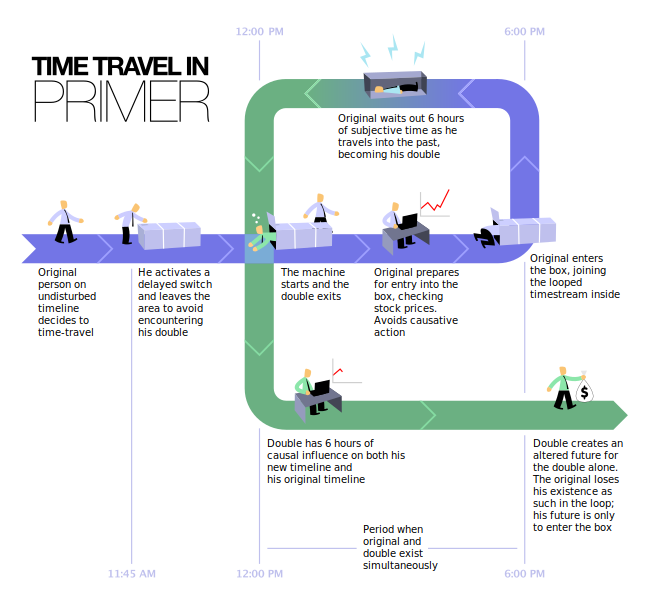

Identity enigma (Part 1)
Primer’s teletransportation paradox?
Sci-fi movies have always captivated me, especially those that delve into time travel. Gone are the days when the mere presence of a time travel gadget or a loop day would impress most people.
With a meagre investment of only $7000, Shane Carruth directed and produced the remarkable movie “Primer” (2005), which earned the Grand Jury Prize at the 2004 Sundance Film Festival.
Unlike a typical time travel flick where the protagonist uses a machine to traverse backwards or forward in time or possesses the superpower to navigate past, present, and future, “Primer” offers a unique plot. Protagonists Aron and Abe discover time travel through the machine they invent, a time box, which essentially creates at least two versions of the same person. Aron and Abe exploit the box by making profitable stock trades, apparently with the success of putting their old selves in the box, quite literally.

By derivative work: Tom-b (talk)Time_Travel_Method.jpg: Original uploader was William lee0 at en.wikipedia - Time_Travel_Method, CC BY-SA 3.0
Hold your thoughts.
Multiple versions of Aron and Abe co-exist in the later days. As a viewer, it becomes harder to discern which pair is the original. And this hits the nail on the head of the entire time-travel enterprise of the movie for us.
Say that in an instance of time travel in the movie, a duplicate of Aron is formed. What is there to say that this iteration’s Aron is less real than the “original” Aron? The duplicate retains all previous memories, experiences, and consciousness; all iterations are essentially identical!

© Pratik Bhandari, CC BY-NC-ND 4.0
The movie’s subtle response to this, among many questions, is suggested in the airport scene. Aron leaves the town, while Abe wishes to remain. A heated argument ensues regarding what to do about the “problem” of the other originals/duplicates: to leave them be or address the situation. Perhaps Shane Carruth intended to convey that all duplicates possess their unique identity until their formation, after which new stimuli influence their individuality. They are free to take different, independent roads.
Is this question any different than the Teletransportation paradox? Without being a philosopher, it seems like “Primer” also grapples with the Teletransportataion paradox, albeit with a fresh perspective on the issues of identity and consciousness. Instead of asking if you remain the same person when disassembled here and reformed on Mars, “Primer” asks a different question: if an identical copy of you is created, which one would indeed be you? To phrase it differently, if you wake up and find a duplicate version of yourself, which of you would be you? All to say, “Primer” also showcases the essence of the Teletransportation problem.
Is this question pointed out above any different than the Teletransportation paradox? Without being a philosopher, it seems like “Primer” also grapples with the Teletransportataion paradox, albeit with a fresh perspective on the issues of identity and consciousness. Instead of asking if you remain the same person when disassembled here and reformed on Mars atom by atom, “Primer” asks a different question. If an identical copy of “you” is created, which one is the real you? To phrase it differently, if you wake up and find a duplicate version of yourself, which of you would be you? All to say, “Primer” also showcases a different face of the Teletransportation problem.
The movie is not a getaway place to find solutions to the philosophical quandaries of the mind, consciousness, and identity. But sometimes, it’s fun looking out from someone else’s eyes in art. The problem of consciousness may not be solved in the next twenty-five years. But “identity”? It is more than an academic estimation to bet on a bottle of wine. Identity extends beyond personal, national, and second person observation in behavioural sciences. We will try to talk about these them next time, hopefully with some experts. Aren’t we all experts in a way, after all?
Thoughts? Get in touch.
Wait for Part 2.